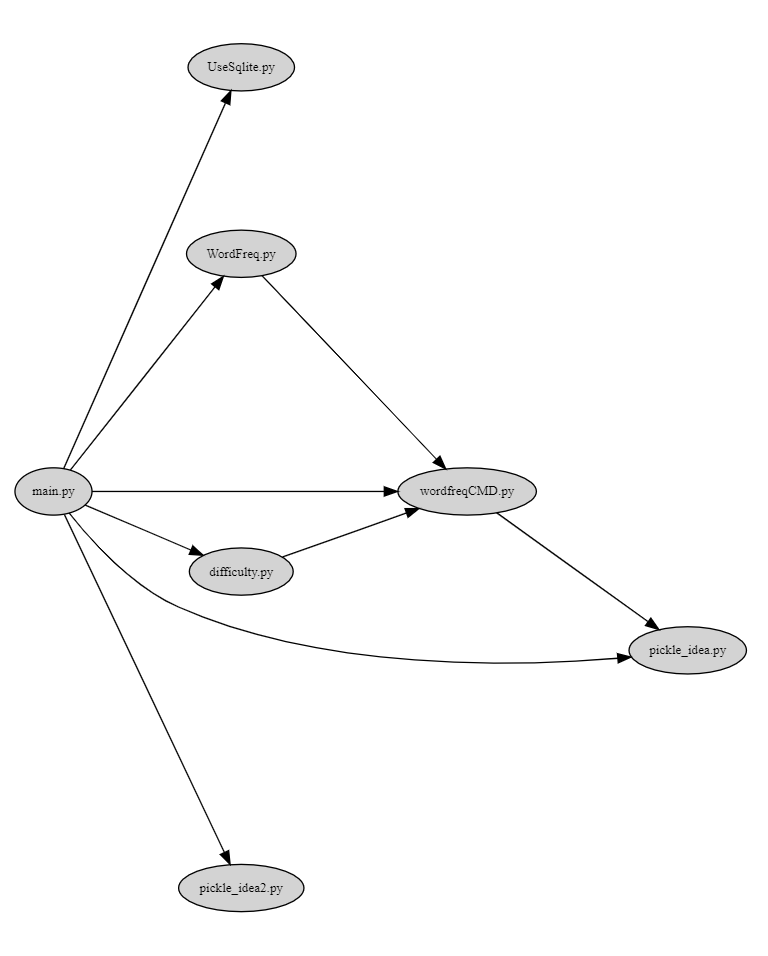

EnglishPal Dependency Analysis and Dependency Graph
Author: 占健豪, 王彦超, 陈致远, 汤佳伟
Date: 2021/5/17
Location: 22-206
Introduction
EnglishPal is a website application dedicated to helping people improve their English. This lab study help us understand the current health level of the architecture of EnglishPal.
Materials and Methods
The module-level dependencies are captured by snakefood, and the class/function-level dependency graph for EnglilshPal is hand-drawn and can be plotted by Mermaid.
Results
EnglishPalModule.dot:
strict digraph "dependencies" {
graph [
rankdir="LR",
overlap="scale",
size="8,10",
ratio="fill",
fontsize="16",
fontname="Helvetica",
clusterrank="local"
]
node [
fontsize=10
shape=ellipse
// style=filled
// shape=box
];
"UseSqlite.py" [style=filled];
"WordFreq.py" [style=filled];
"WordFreq.py" -> "wordfreqCMD.py";
"difficulty.py" [style=filled];
"difficulty.py" -> "wordfreqCMD.py";
"main.py" [style=filled];
"main.py" -> "UseSqlite.py";
"main.py" -> "WordFreq.py";
"main.py" -> "difficulty.py";
"main.py" -> "pickle_idea.py";
"main.py" -> "pickle_idea2.py";
"main.py" -> "wordfreqCMD.py";
"pickle_idea.py" [style=filled];
"pickle_idea2.py" [style=filled];
"wordfreqCMD.py" [style=filled];
"wordfreqCMD.py" -> "pickle_idea.py";
}

2. class/function-level.txt
graph LR
load_freq_history -->pickle_idea.load_record
verify_user --> Sqlite3Template.RecordQuery
add_user -->Sqlite3Template.InsertQuery
check_username_availability --> Sqlite3Template.RecordQuery
get_expiry_date -->Sqlite3Template.RecordQuery
get_today_article --> Sqlite3Template.RecordQuery
get_today_article --> load_freq_history
get_today_article --> difficulty.get_difficulty_level
get_today_article --> user_difficulty_level
get_today_article -->random.shuffle
get_today_article -->random.choice
get_today_article --> text_difficulty_level
get_today_article --> within_range
get_today_article --> get_answer_part
mark_word --> load_freq_history
mark_word --> pickle_idea.dict2lst
mark_word --> pickle_idea.merge_frequency
mark_word --> pickle_idea.save_frequency_to_pickle
mainpage --> WordFreq
mainpage --> load_freq_history
mainpage --> pickle_idea.dict2lst
mainpage --> pickle_idea.merge_frequency
mainpage --> pickle_idea.save_frequency_to_pickle
mainpage --> pickle_idea.dict2lst
user_mark_word --> load_freq_history
user_mark_word -->pickle_idea2.dict2lst
user_mark_word -->pickle_idea2.merge_frequency
user_mark_word -->pickle_idea2.save_frequency_to_pickle
userpage --> WordFreq
userpage --> pickle_idea.load_record
userpage --> load_freq_history
userpage --> sort_in_descending_order
signup --> check_username_availability
signup --> render_template
signup --> add_user
signup --> verify_user
login --> render_template
login --> verify_user
difficulty.load_record --> pickle.load
difficulty.difficulty_level_from_frequency --> math.log
difficulty.get_difficulty_level --> revert_dict
difficulty.get_difficulty_level --> sort_in_ascending_order
difficulty.text_difficulty_level -->sort_in_descending_order
pickle_idea.merge_frequency --> pickle_idea.lst2dict
pickle_idea2.merge_frequency --> pickle_idea2.lst2dict
Sqlite3Template.do --> Sqlite3Template.connect
Sqlite3Template.do --> Sqlite3Template.instructions
Sqlite3Template.do --> Sqlite3Template.operate
WordFreq.get_freq --> wordfreqCMD.sort_in_descending_order
graph LR
load_freq_history -->pickle_idea.load_record
verify_user --> Sqlite3Template.RecordQuery
add_user -->Sqlite3Template.InsertQuery
check_username_availability --> Sqlite3Template.RecordQuery
get_expiry_date -->Sqlite3Template.RecordQuery
get_today_article --> Sqlite3Template.RecordQuery
get_today_article --> load_freq_history
get_today_article --> difficulty.get_difficulty_level
get_today_article --> user_difficulty_level
get_today_article -->random.shuffle
get_today_article -->random.choice
get_today_article --> text_difficulty_level
get_today_article --> within_range
get_today_article --> get_answer_part
mark_word --> load_freq_history
mark_word --> pickle_idea.dict2lst
mark_word --> pickle_idea.merge_frequency
mark_word --> pickle_idea.save_frequency_to_pickle
mainpage --> WordFreq
mainpage --> load_freq_history
mainpage --> pickle_idea.dict2lst
mainpage --> pickle_idea.merge_frequency
mainpage --> pickle_idea.save_frequency_to_pickle
mainpage --> pickle_idea.dict2lst
user_mark_word --> load_freq_history
user_mark_word -->pickle_idea2.dict2lst
user_mark_word -->pickle_idea2.merge_frequency
user_mark_word -->pickle_idea2.save_frequency_to_pickle
userpage --> WordFreq
userpage --> pickle_idea.load_record
userpage --> load_freq_history
userpage --> sort_in_descending_order
signup --> check_username_availability
signup --> render_template
signup --> add_user
signup --> verify_user
login --> render_template
login --> verify_user
difficulty.load_record --> pickle.load
difficulty.difficulty_level_from_frequency --> math.log
difficulty.get_difficulty_level --> revert_dict
difficulty.get_difficulty_level --> sort_in_ascending_order
difficulty.text_difficulty_level -->sort_in_descending_order
pickle_idea.merge_frequency --> pickle_idea.lst2dict
pickle_idea2.merge_frequency --> pickle_idea2.lst2dict
Sqlite3Template.do --> Sqlite3Template.connect
Sqlite3Template.do --> Sqlite3Template.instructions
Sqlite3Template.do --> Sqlite3Template.operate
WordFreq.get_freq --> wordfreqCMD.sort_in_descending_order
Shortcoming:
The addition of the web pages makes the system inefficient to deliver media elements.
All the processing tasks are done by the server before the delivery of the content to the client. The server inefficient to handle multiple user requests.
Any development change or maintenance costs a lot.
Advantages:
Efficient with full-stack, no communication costs between front-end and back-end.
Effective for simple and small projects, with simple CRUD and smaller codebase, it's more enough.
Higher security, protecting the API from attack.
Similar concept and syntax, it helps focusing on project features.
It reduces the mistakes in communications.
Discussions
Through this lab we tried to understand the current health level of the architecture of EnglishPal. During the lab, we learnt to use Snakefood, Graphviz Online, Mermaid as well as Read the Docs. Most importantly, we mastered a basic work flow of analysing the structure and the dependency of an existing project which will sure to contribute to the future work.
References
Graphviz. https://graphviz.org/
Graphviz Online. https://bit.ly/3uYDiLV
Read the Docs. https://readthedocs.org/
Snakefood: Python Dependency Graphs. http://furius.ca/snakefood/
Mermaid. https://mermaid-js.github.io/mermaid/#/
Jacopo Malnati. X-Ray 1.0.4.1, my Bachelor and Research Project. https://xray.inf.usi.ch/xray.php
Sofia Peterson. A Brief Guide How to Write a Computer Science Lab Report. https://thehackpost.com/a-brief-guide-how-to-write-a-computer-science-lab-report.html
lab1.pdf.